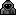

|
Alguien que me podría recomendar un juego de genero terror psicológico para PC? Emm los Silent Hill son Survival Horror y juegan mucho con el terror/miedo psicologico. Algunos son de Play Station 1 pero que juegazos! Si no los jugaste te los recomiendo, aunque seguramente ya lo habrás hecho Saludos Amnesia es bastante viejuno así que supongo que tendrá pocos requisitos.
kalibanAmnesia es bastante viejuno así que supongo que tendrá pocos requisitos.
Ese juego me llama bastante la atención :3 La verdad es que esos no dan mucho miedo, como mucho algún susto ocasional. Five night´s at Freddy´s es un juego con una temática innovadora que te hará pasar buenos (mas bien malos y frustrantes) ratos. Eso si, lo único que tiene para dar miedo son sustos y screamers, pero te mantiene tan en tensión que seguro que pegas algún grito. Una pequeña joya escondida es Evil, te recomiendo que lo jueges, no es de gritos ni violencia, pero contiene imágenes que realmente te van a dar miedo cuando las veas. Podría recomendarte mas, pero seguro que has oído hablar de ellos.
Adriandando
Podría recomendarte mas, pero seguro que has oído hablar de ellos. Tu sigue hablando XD A mi los que más tensión me dan son los juegos tipo Amnesia que todo el mundo conoce y que todo el mundo ha hecho gameplay cargandose completamente la ambientación y haciendo que el que lo ve se pierda el ¿solo 50%? del juego. De este tipo tienes la saga Penumbra (una especie de boceto de Amnesia), el nuevo Alien (lo tengo pendiente para la semana que viene que acabo examenes), el Gauntin groud (una evolución del clock tower, pionero en este tipo de jugabilidad) o el silent hill shattered memories, una spin-off con una historia que no voy a spoilerarte pero una vez lo acabes te vas a caer de culo. También tienes ese tal Amnesia 2 que no está tan mal pero si has jugado al primero escupes en su nombre peeeero creo que es porque todos esperábamos una versión mejorada de Amnesia y fue lo mismo o puede que un escalon por debajo. Esa versión mejorada nos llego con outlast y su expansión, para mí, de los mejores juegos de terror hasta la fecha y un must have en toda regla si te gusta este tipo de juego. Luego tenemos los juegos tipo RE (hasta el 3 sin incluir, los otros son COD con bichos). A mi, miedo no me dan, eso si, sufro una crisis paranoica con la munición que me hace estar en tensión todo el juego. MUY recomandable el remake del primero. Y con el tercero... ya me contarás los OSTIA P*TA que soltaras cuando salga el nemesis. También tenemos los shilent hill que es lo mismo pero muy distinto xD, ni se te ocurra perdertelos. El alone in the dark the new nigthmare da miedito, es viejo pero da miedito. Ah!!!! ¿te gusta RE?¿te gusta los dinosaurios? Pues corre delante de ellos como un cabrón con dinocrisis!!! El segundo es distinto pero bueh. NO hay un tercero NO y NO. La saga fatal frame (o project 0) es muy muy buena. Estilo RE pero "mejorado", distinto mejor dicho. En mi humilde opinión, los fantasmas que me aterrorizaban de pequeño volvieron en forma de videojuego, calcados tal cual, da mucho yuyu. Miedo no, porque no juegan con los sustos si no creo que estaría acojonado. El remake del 2 es MUY bueno y el juego todavía más, con una loca que está muy loca y te aseguro que que te cagaras. El tercero no salio de japon, si pillas un loro y un parche lo consigues facil y te aseguro que no te arrepentiras. Tomaron nota de su antecesor eso te lo aseguro. De este tipo hace poco salio una especie de demo/primera parte del DreadOut, una copia tal cual pero que no tiene perdida. Corto y bueno. Luego tengo que mencionar algunos como Eternal Darkness al que no te voy a decir NADA porque me cargare el juego. En serio, no leas NADA acerca de él. El parasite eve (el primero y como mucho el 2). The forest (minecraft+minioutlast), The forbiden siren, dayligth, obscure y uno que me hizo mucha gracia (bueno, no tanta): Ju on, the grudje. Si, esa peli que la viste y no entendiste tiene un juego. Es corto y va de "sustos" pero tienes que reaccionar rápido. Al principio da cosica luego ya te acostumbras. El the walking dead no es que sea un juego de terror, si que tiene un ambiente no busca el miedo El nuevo nuevisimo the evil within no está mal. Lo empecé pero mi pc lo aguantaba a duras penas. No se si hice mucho o poco pero lo que vi es que va a caballo de todas las mecancias de juego, Por otro lado, estoy a la espera del nuevo SOMA, Routine y siguiendo de cerca el Dying Light que parecia buscar el miedo pero parece que ahora esta cogiendo una trayectoria más hacia la acción. Si sabeis más por favor, ponedlos. Juegos que busque el miedo y no, me niego a poner juegos ambientados en el terror si no hasta el conker valdría por su fase de los zombies. Cuando alguien sabe de lo que habla, se nota, y tu...bueno ¡Tu parece que te hayas sacado la carrera de juegos de terror! Yo, al recomendar juegos de terror, recomiendo los que realmente dan miedo o los poco conocidos que merece la pena jugar, pero en fin, allá tú. Tampoco te puedo decir mucho que no alla dicho este. Si lo que te interesa es una buena historia y una trama complicada, pero con un susto ocasional, te recomiendo Outlast. Que es lo que pasa cuando juntamos buenos desarrolladores de juegos indie con un presupuesto bastante aceptable. No es precisamente perturbador (a no ser que seas muy sensible), pero seguro que te llevas algún susto. La historia, escasa en giros argumentales que no le hacen falta y que se va descubriendo sola, hace que te metas en ella y empatices un poco con el personaje. Es el típico juego, el cual, al completarlo, haces un esquema mental con todo lo que ha pasado porque LO MERECE. Si lo que te gusta es un survival horror está The Evil Within, últimamente se ha puesto de moda, no lo he jugado, pero te recomiendo echarle un vistazo. Si nos metemos en el tema de los indies, he de decirte que, aunque algunos son innovadores y merecen ser jugados, la mayoría son una soberana porquería realizada por programadores pésimos y sin creatividad. ¡Espero haberte ayudado! Ya te diré mas. El Cry Of Fear es gratis y lo tienes en steam. (Aunque es más puro screamer que psicológico, cuenta como psicológico.) Para jugar online te has de bajar el Evolve o el Hamachi. el desive nevil 4 Best_User_EUWEl Cry Of Fear es gratis y lo tienes en steam. (Aunque es más puro screamer que psicológico, cuenta como psicológico) El típico juego de terror actual que busca el susto fácil y que solo consigue poner tenso por sabes cuando va a salir esos sustos mas que por la ambientación general del juego. Un ejemplo contrario seria Alone in the Dark: The New Nightmare para ps2 (aunque claro, este juego ya para el tiempo actual no tiene el mismo impacto que jugarlo solo de noche en la época que salio (y con 9 años)) Bonus: Jojojojojo así si que daría miedo (no scramero), mas si esta pinkie por hay xD No es propiamente terror, pero te invito a probar ゆめニッキ (Yume nikki), diviértete jugándolo primero, y después barajando las teorías más locas acerca del mismo ^^... xiwangchanNo es propiamente terror, pero te invito a probar ゆめニッキ (Yume nikki), diviértete jugándolo primero, y después barajando las teorías más locas acerca del mismo ^^... Emmmmm.... se supone que este tema es para recomendar juegos de terror, no de freírse el cerebro pensando cada situacion que se tiene delante sin tener el tiempo de sentir terror por algunas cosas que aparecen (las cuales en ese juego suelen ser muy muy wtf) .¬.
BigCheeseEmmmmm.... se supone que este tema es para recomendar juegos de terror, no de freírse el cerebro pensando cada situacion que se tiene delante sin tener el tiempo de sentir terror por algunas cosas que aparecen (las cuales en ese juego suelen ser muy muy wtf) .¬.
Hay quienes se aterran con algunos escenarios y situaciones del juego, por eso lo he puesto ^^... Mmm... si... Yume Nikki...la verdad es que el juego por si solo no explica nada, no hay casi texto y los diálogos son inexistentes, el manga no está hecho por el creador y se entiende todavía menos que el juego, la novela se supone que explica mejor la trama, pero solo está en japonés (frustrante He visto varias teorías muy interesantes, la mas creíble era la de un tío en youtube llamado "el orgullo del operador", me parece. Fue el único capáz de elaborar una trama creíble y conectar las partes mas raras del juego. Otra persona, en los comentarios, dijo que por la ropa y otras cosas, pensaba que el juego podría desarrollarse en los 90, había estudiado esa época (ojo al dato, puede ser importante). Hay un rumor no oficial, según alguna gente el creador dijo en una entrevista (está en japonés, no puede verificarse) que su novia se tiró por la ventana y nunca supo por que, pero el cadaver tenía en los brazos un libro con las palabras Yume Nikki (en japonés, diario de mis sueños). En el libro estaban dibujadas todas las escenas que se ven en el juego, en las que la protagonista (supuéstamente la novia) buscaba los huevos (no recuerdo su nombre ¿Atributos?¿Asepectos?). Los que hayan visto el final, sabrán encajar las piezas de la historia. Me parece que el creador iba a hacer una segunda parte, pero murió en el tsunami (espero que no sea cierto Podría hablar mucho de este tema, pero no quiero que los moderadores cierren otro tema porque lo desvío demasiado de su intención original. Si alguien tiene recursos para aportar algo a la comunidad hispanohablante del juego, etérnamente agradecidos, sobre todo si es alguien familiarizado con el japonés. Como juego de terror no lo recomiendo, como juego en general... una experiencia, sobre todo si te gustan las historias ocultas o cosas muuuuuuuuuuyyy raras. xiwangchan Ciertamente Adriandando Si quieres hablar mucho del tema haz un tema sobre ese juego y seguramente varios miembros de la comunidad (entre los que me incluyo) estarán encantados de comentar contigo todo lo referente al mismo entre ideas y todo lo relacionado al juego en general. Respecto al tema acabo de recordar esto el cual es un enlace a una pagina de una wiki con un buen numero de survivals horror (tanto buenos como malos) Existe cierto juego de Rol de Terror, muy, pero muy, pero muy requetemegaultraextremadamente terrorífico poco conocido...
RiyoExiste cierto juego de Rol de Terror, muy, pero muy, pero muy requetemegaultraextremadamente terrorífico poco conocido...
Que por razones externas a mí no puedo entregar su respectivo enlace ni nombre ni historia. (?)
¡No se me había ocurrido, BlaCheese! La verdad es que quería contribuir mas a la comunidad twinoide escribiendo un post con 2 teorías propias sobre terraria (si, soy el único que hace teorías de un juego sin historia), recomendando juegos (¡Cuando aprenderá la gente a quererte a pesar de estar en ASCII, Dwarf Fortress!) y escribiendo un par de historias que tenia guardadas (en una maraña de documentos, letras de canciones, dibujos, hojas a sucio, fotos tamaño falsilla, transcripiciones de algunos discursos y cosas que no os podeís ni imaginar... tengo que poner orden...). Peeeeeerooo... soy un vago, un deplorable vago. Lo dejaré en la lista de cosas pendientes. Hoy mismo me pongo con lo de terraria ¡Vago de mierda! Mueve el culo del sofá y siéntalo en la silla a escribir. ¿Nadie menciono a slenderman y sus ocho notas ? Yo lo hice, pero sin mucho detalle, todo el mundo lo conoce. Holas... haber si miras estos jueguitos no estoy muy seguro que tan terror sean pero puede que te interesen: Mikoto nikki Juega a Amnesia y prepárate para hacerte rico con la Youtube MOney. #SW4G n THUG YUTUB LIFE. Los 2 que recomiendas no los conocía, Drake ¿Me los describes? Xd solo me lo comentaron por ahi man pero nunca los jugué... pero aqui te dejo algunos RPG mas que encontre y un buen blog con la tematica que deseas. Click→ Con esto bien servido. DrakeSoul no se hace responsable por el estado mental y lo friki que puedan quedar de tantos juegos de terror. Realmente la mayoría de juegos de terror son algo y frikis... y no son de terror... ¡No he encontrado muchos que den miedo de verdad! La mayoría que califican de "perturbadores" están sobrevalorados, y el género está muy explotado, ya llega a ser muy repetitivo. Los juegos de terror de grandes compañías parece que te los has pasado un millón de veces a pesar de ser distintos, y el 90x100 de los indies siguen la misma fórmula "vas recorriendo un escenario en primera persona, que suele ser un edificio o un bosque, y se supone que hay un monstruo, tu personaje puede saberlo o no, pero no habla, la mayoría de las veces. las cosas se van poniendo cada vez mas tensas hasta que aparece el monstruo". Puede terminar allí o no pero, pase lo que pase, habrá repetición. A veces sale el monstruo directamente, ni eso se libra. Los que veo que se libran son el terror en 2d o los RPG de terror, que no suelen ser tan repetitivos. El único que me llegó a dar "miedo" (no ffué exactamente eso, pero no se como describirlo) fue Evil. No por los ya muy típicos screamers, gritos y demás tonterías, no tenía casi de eso, sino por las imágenes. Recomiendo jugarlo a todos aquellos que quieran pasar miedo, no excesivamente "perturbador" pero absolútamente recomendable. Y aclaro una cosa a todos los que usan la palabra "perturbador" para describir a un juego. Seguramente no teneís ni idea del significado o extensión de las palabras "perturbador" o "traumatizante". Si el juego fuese realmente perurbador, con mucha probabilidad lo habrían retirado del mercado. Siento si repito mucho algunas palabras, pero es de noche y mi cerebro está cansado...
Adriandando
Y Five Nights at Freddy's? Ya hablé de el, a ver si la gente lee... ¡Por no hablar de su historia! Dentro de el juego no revela toda, lo que te dice el hombre del teléfono no es ni el 10x100, muchas cosas se encuentran haciendo una captura a un cartel y haciéndole zoom, pero la mayoría las revela el propio creador, os recomiendo entrar en la wiki oficial para enteraros un poco. ¡Absolutamente recomendable! Se echaban de menos juegos así. PD: Un tal The Living Tombstone hizo una canción de el, alguien la subtituló al español y cambió el video original por imágenes de los animatrones cantando (creo que fue con Photoshop), per como lo único que encuentro es ese video resubido por gente diciendo que no es suyo, os doy el canal del autor original: https://www.youtube.com/redirect?q=ht... PD2: Si buscaís el video que menciono seguro que lo encontraís, pero los resubidos son exáctamente iguales.
Adriandando
Ya hablé de el, a ver si la gente lee... ¡Por no hablar de su historia! Dentro de el juego no revela toda, lo que te dice el hombre del teléfono no es ni el 10x100, muchas cosas se encuentran haciendo una captura a un cartel y haciéndole zoom, pero la mayoría las revela el propio creador, os recomiendo entrar en la wiki oficial para enteraros un poco. ¡Absolutamente recomendable! Se echaban de menos juegos así. PD: Un tal The Living Tombstone hizo una canción de el, alguien la subtituló al español y cambió el video original por imágenes de los animatrones cantando (creo que fue con Photoshop), per como lo único que encuentro es ese video resubido por gente diciendo que no es suyo, os doy el canal del autor original: https://www.youtube.com/redirect?q=ht...PD2: Si buscaís el video que menciono seguro que lo encontraís, pero los resubidos son exáctamente iguales. Ya sé que lo habías puesto, pero de repente te lo saltas como si nada en el post anterior. AdriandandoPD: Un tal The Living Tombstone hizo una canción de el, alguien la subtituló al español y cambió el video original por imágenes de los animatrones cantando (creo que fue con Photoshop), per como lo único que encuentro es ese video resubido por gente diciendo que no es suyo, os doy el canal del autor original: Living Tombstone jajajajajajaja reconocí al instante el nombre por su OC de my little pony (que es uno de los mas famosos) Bueno y a lo que iba es que ¿puede ser este video? https://www.youtube.com/watch?v=HAW2X... Ha y tu link al parecer no lleva a ninguna pagina en youtube (da un error) dejo el del canal de Tombstone: https://www.youtube.com/user/TheLivin... ¡Que raro! A mi me funciona. Nop, no es ese, era uno con la cara de los muñecos echa con paint (aunque de gran calidad) moviéndose por la pantalla. Y ¿Qué relación tienen las palabras The Living tombstone com My Litle Pony? Adriandando¡Que raro! A mi me funciona. Pues ya solo se me ocurre esto: https://www.youtube.com/watch?v=8IoP8... PD: Esta relación: http://mlpfanart.wikia.com/wiki/The_L... Nop, no es ese tampoco. ¡Ya lo encontré, a este me refería! Por cierto ¿Alguien ha jugado ya Evil y me puede dar su opinión? 10 horas de nyan cat, ese escenario en el espacio, más terrorífico que Dead Space, y ese malvado gato arcoiris con cuerpo cuadrado...Siempre piensas..¿Qué estará tramando? Sin duda mucho suspenso...Y su voz, hay algo en su chillona voz que lo hace terrorífico...Desde que pronuncia la "N" hasta la..."N" te hace sentir tan...Horrorizado. 100% recomendado por IGN, Meristation, Vrutal, Steam, Origin y Muxxu. Valorado con 9,9 por 3djuegos SOY FREDO GODOFREDO Y ME GUSTA EL YOGURT CONGELADO No uses solo mayúsculas
ErickWyattSOY FREDO GODOFREDO Y ME GUSTA EL YOGURT CONGELADO
Bueno,no cuenta al 100% como de terror,pero recomiendo Space station 13,va de que trabajas en una estacion espacial con mas jugadores y hay diferentes amenenazas,lo que da miedo es que todo pasa tan rapido que puedes estar tranquilamente en ingenieria y que un meteorito te parta en 2 ._. Tenía un juego en mente, pero no lo pude mencionar porque no recordaba el nombre, de repente me ha entrado la inspiración divina: Eversion. Tiene unos gráficos muy infantiles y el típico estilo plataformero, pero se va volviendo mas siniestro cuando avanzamos. EDIT: Algo que se me olvido comentar es que su nombre es la combinación de las palabras ever (siempre) y sion (utopía), cuando juegeís el juego sabréis por que. Cat mario,que miewo :v Por cierto ¿Puede de una vez alguien probar Evil y decirme lo que piensa de el, porfavor? Siempre me ha interesado lo que podría pensar el resto.
AdriandandoPor cierto ¿Puede de una vez alguien probar Evil y decirme lo que piensa de el, porfavor? Siempre me ha interesado lo que podría pensar el resto.
Y ¿Por que en el juego el "monstruo" tiene una máscara como cabeza pero en dibujos del mismo tiene un hexágono? Es algo que siempre me he preguntado, podría ser una forma de representarlo, pero igual el creador nos quiere decir algo... ¿Donde podemos encontrar ese juego? http://www.google.es/url?sa=t&rct... Ahí lo tienes, tengo un par de cosas que decir, pero no recuerdo ciertos nombres, es algo muy interesante. Dadme tiempo, me acordaré. ¿Me puede dar alguien su opinión, porfavor? ¡Me muero por leer mas teorías! Por cierto, investigué mas sobre el "monstruo" (si se le puede llamar así, no se explica lo que es), me he dado cuenta de que no tenía cara hexagonal como yo recordaba, sino con esta forma: https://encrypted-tbn3.gstatic.com/im... Y no es que su cara in-game fuese una máscara, es que se la tapaba con una máscara que se sujeta con la mano mediante un palo, no se si me entendeís, algo así:
Adriandandohttp://www.google.es/url?sa=t&amp...
Ahí lo tienes, tengo un par de cosas que decir, pero no recuerdo ciertos nombres, es algo muy interesante. Dadme tiempo, me acordaré. Ya lo jugué, no lo quiero tocar más. ¡Que final! ¿Eh? No te lo esperabas. Lo pediste y te lo di ¿Qué te ha parecido? Wow algunos saben tanto que hacen parecer a uno no gamer xD... cuando tenga tiempo voy a probar alguno...para que se den una idea hace un año que lo único que juego son las partidas diarias de twinnoid..en cualquier momento me agarra un hyperataque de abstinencia y tiro la facultad al diablo xD. Yo solo jugué: Que nostalgía, estos juegos marcaron mi infancia Igual soy de los que juegan varios géneros, no soy tanto de explotar un genero al máximo(por ejemplo terror) ya que todos tienen similitudes y de cierto modo me parece que estoy jugando lo mismo xD...hasta que vuelvo denuevo De todos los juegos nombrados, quiero que me recomienden el Mejor, el que no me puedo morir sin jugarlo...no vale decir 2 xD Estaría bueno que se vayan haciendo temas con distintos generos, la verdad creo que hay varios que saben mucho y estaría bueno saber la opinion de ellos jaja...por ejemplo un tema RPG, uno de FPS, otro de Plataforma, Aventura o si no es por género que sea por algun aspecto como Zombies, Novelas Visuales, Bizarro xD, etc Describeme el Parasite eve En jugabilidad es similar a los otros 3 que nombre, tercera persona y con la pantalla o "cámara" por secciones, inventario, municiones limitadas,etc. Lo distinto es que méte elementos de RPG, como subir de lvl al personaje y armas, ganar habilidades. En el 2, meten bastante RPG, a mi en lo personal me encantó. La historia me parece buena, es dificil de entender(experimentos locos y eso El nivel de dificultad me parece muy bueno, si jugas el juego tranqui es decir sin lvlear al maximo y eso el juego se te puede complicar mucho (tanto el 1 como el 2). Ah,y no te enamores de la rubia eh! No recuerdo muy bien la música, recuerdo que lo openings y escenas me encantaban, pero creo que no estaba nada mal en ese aspecto. Ambos los jugué para la Playstation 1, no recuerdo si estaban para PC pero con un emulador se pueden disfrutar. Tambien hay una tercera entrega pero lamentablemente no tengo una PSP...aunque me dijeron que es muy bueno, y como no soy de mirar gameplays no sabría decirte. Como bien dijeron quizás no son juegos en donde hay una mega hyper tension y estas asustandote de cualquier cosa...hay digamos más acción, pero como siempre digo TODO depende de que tanto te metas en el rol del personaje...tenes que pensar como el, actuar como el, vivir como el (bueno ya me emocioné xD)y así va a surgir un interesante juego. En mi opinion son buenos juegos,me gusto más el 2, y al jugarlos en mi infancia los llevo en el corazón los juegos de la infancia siempre se re-juegan (o te dejan con las ganas). .Five Night´s at Freddy´s: Justo cuando parecía que el género survival-horror se había convertido en uno de los mayores vertederos de el mundo de los videojuegos, llegó este. Una jugabilidad innovadora, un susto que, para estar basado en screamers, consigue que pegues gritos tremendos y una historia que parece simple si no se analiza en profundidad, pero que al rebuscar secretos te das cuenta de lo complicada que es. .Evil: No quiero decir nada, ya que ya dije demasiado. ¡Una auténtica experiencia! Sustos tan bien colocados y diseñados que sorprenden, en serio, jugadlo. .Yume Nikki: No es completamente de terror, mas bien pretende inquietar y hacer pensar (sin llegar a nada nunca). Consigue recrear perfectamente la esencia de los sueños y del horror japonés. Sin duda es el mas inquietante que he jugado, una situación se ha repetido varias veces y es que un elemento del escenario ha conseguido hacer que de marcha atrás. Por ejemplo, estaba en una alcantarilla, podía ir por la izquierda y la derecha, fui por la izquierda y, tras caminar un rato, encontré la cara de un tío muy siniestro saliendo del agua mirándome. Habría podido pasar delante suya si mas, pero era TAN SINIESTRO que me dije "vamos a ir por el otro lado". Es OBLIGATORIO probarlo, cuando lo hagas no podrás dejar de buscar información y teorías... Hay un juego que salió hace bastante, de el solo he visto 10 segundos de video y una imagen, una cara blanca hecha de píxeles. Su nombre es "Tag With Me", la única traducción de tag como verbo al español es etiquetar, me pregunto de que irá. Hay que echarle un vistazo. Yo probe Five nights at freddy´s,y me encanto,en el 2 Foxy siempre me pilla en la noche 2 Five nights at freddy´s 2 Estoy luchando por pasarme la noche 5 y conseguir la noche 6 y la custom Pero como voy no creo que me pase ni el reto del cupcake En cambio a las historias y las diversas teorías ya nose en que creer :/
Adriandando¡Que final! ¿Eh? No te lo esperabas. Lo pediste y te lo di ¿Qué te ha parecido?
El final es un poco extraño, como que dice que las alarmas son el mal y cuando se estaba poniendo todo raro también traté de pasármelo rápido. Y por eso no me enteré de mucho Si quieres te paso el canal del creador: Estoy seguro que es el, fíjate en la descripción de la página de descarga. Eaglehearthbla bla parasite eve bla bla Era en el 2 el de la escenaca de la ducha no??? Nos tumbó a todos de culo la calidad grafica pa la epoca, bueno no, la grafica no fue lo que nos tumbó si no más bien lo grafico de la escena El primero me triunfó más, el tercero bah. Es TAN DIFICIL jugar en noches avanzadas que, en una noche 7 customizada con todos los animatrones al 20 solo han sobrevivido 2 personas: Un chileno y un británico. El primero lo intento durante 7 horas seguidas, el segundo... ¡Pffff! 13. Y eso en el 1, donde solo hay 4 animatrones y el contacto con ellos es mas escaso debido a las puertas, en el 2 hay 9 contando a la marioneta, la cual, por cierto, te exige que le des cuerda a la caja por muy presionado que estés. ¿Os imaginaís una noche 7, todos al 20, en el FNAF 2?
MacfletusEra en el 2 el de la escenaca de la ducha no??? Nos tumbó a todos de culo la calidad grafica pa la epoca, bueno no, la grafica no fue lo que nos tumbó si no más bien lo grafico de la escena
 Jaja si, buenas escenas, Aya estaba reflexionando AdriandandoEs TAN DIFICIL jugar en noches avanzadas que, en una noche 7 customizada con todos los animatrones al 20 solo han sobrevivido 2 personas: Un chileno y un británico. El primero lo intento durante 7 horas seguidas, el segundo... ¡Pffff! 13. Hay mucha gente que el 1 lo ha pasado con todo al 20 y ya hay gente que lo ha pasado el 2 con todo al 20 y no son 9 contando a la marioneta, son 11 contando a la marioneta PD: Eso si, es mucho mas difícil que el 1, pero se agradece que en el 2, Bonnie no te pueda matar a distancia (que creo que es un bug) Si contamos al Golden Freddy son: 1-El Freddy viejo Sip, son 11... ¡Oh, mierda! ¡No había visto el enlace! me habría ahorrado apuntarlos. Fnaf 2 es buenísimo, yo voy por la noche 5, me costo bastante la 4, aunque note que bonnie, chica y freddy nuevo estaban muy inactivos Es que tienen distintas ID, así lo dice en el juego mismo. Los viejos son mas peligrosos que los nuevos, mucho mas peligrosos. Bueno hoy me voy a tomar el día y voy a jugar un poco de:
Unas horas a cada uno ^__^ EaglehearthBueno hoy me voy a tomar el día y voy a jugar un poco de: Si vas a jugar al FNAF si es el 1 un consejo que te puedo dar es que estés atento a los sonidos, cuando Bonnie o Chica te van a matar se escucha una risa muy baja (y con eso puedes evitar morir de un infarto por ellos). Si ves a Foxy o Golden Freddy tienes menos de dos segundos para reaccionar si no estas muerto (Foxy siempre viene por la puerta izquierda, Golden se va si miras las cámaras). Al oso lo puedes ver venir porque se escucha una canción. Aquí tienes un vídeo sobre Evil: https://www.youtube.com/watch?v=rG3U2... Sobre el Yume Nikki tienes que jugar un poco para saber si te va a gustar o no, se te puede decir que es un juego genial, que deberías jugarlo, al igual que decirte que es una mi y ni te molestes. Lo que esta claro es que no es un juego para todo el mundo (como casi todos los que existen)
Eaglehearth
Bueno hoy me voy a tomar el día y voy a jugar un poco de:
Unas horas a cada uno ^__^ FNAF es absolutamente recomendable, por desgracia no hay traducción al español, pero yo te puedo transcribir aquí lo que dice el tío (en el 1 ya es muy importante, pero en el 2 los consejos que da lo son mas)). Y Yumme Nikki si tiene un objetivo , debes vagar por los mundos para encontrar objetos con forma de huevo llamados aspectos. Cada uno te transforma en algo distinto (un semáforo, un oni...) y es útil a su manera, solo hay que encontrarle el uso. Por ejemplo, el aspecto de cuchillo te permite matar algunos NPC, el de mano escapar de cierto lugar que no te quiero decir etc. etc. .Exe. Todos los juegos de esa saga te cagaran de las patas. Busquen en youtube DT, un juego de terror para Ps4, miren un gameplay de la beta Ahi jugué: El yume nikki me pase horas andando en bici DenumII .Exe. Todos los juegos de esa saga te cagaran de las patas. Vi un par de videos, parecen que solo consisten en gritos fuertes no hay mucha trama aunque si uno se pone a pensar bien son perturbadores xD como (spoil), pero mucho más que eso no tienen. ¡No spoilees el final, hombre! No, no hay otro, es una única ruta a seguir. Es posible que no de un cague de perturbarte de por vida, pero yo no lo recomendé por eso. Lo recomendé por que, aunque es un juego casual de usar y tirar, es una experiencia. Una vez lo terminé fui capaz de imaginar cosas que antes no había imaginado, por ejemplo (spoiler): En la parte del video, algunos movimientos eran "antinaturales", si lo has visto entiendes a lo que me refiero. Antes no era capáz de imaginar que podía hacerse algo así, ahora, aunque no se como se logra eso, se que se puede. Y los .exe... no se que decirte, no dan mucho miedo, los sutos son poco elaborados y prácticamente nulos, dejan mucho que desear si los sacas de su esencia de "juego maldito". A ver, de momento tengo estos en la lista de los que tengo que jugar: Siren blood El rule of rose me atrae bastante, aunque solo salio para ps2 ¿alguno ha jugado a alguno de estos? Dan miedo de verdad o solamente son algun sustillo o monstruos rarunos con un decorado muy rojo.
Adriandando¡No spoilees el final, hombre! No, no hay otro, es una única ruta a seguir.
Uff fue sin querer, perdón. (spoil alert Ahi jugue el FNAF... tengo que admitir que me agarré varios julepes xD y eso que lo jugue sin auris porque sino hubiera necesitado electroshocks para que me resuciten jaja...igual no lo completé (tengo que hacer unas cosas antes)... Lo raro: es normal pasar la noche 1 y 2 sin que lleguen a las cercanias de la habitación en toda la noche?...prácticamente lo único que tuve que hacer es mirar las camararas, ni siquiera cerré las puertas una vez...puede que me haya bajado una version desactualizada...¿algún link de confianza que ustedes tengan? MacfletusSiren blood FEAR Rule of Rose Forbiden siren Nop, sé por amigos que el FEAR les daba bastante miedo,pero no lo jugué porque no soy un gran amante de los sustos xD aunque de vez en cuando juego alguno que otro. Y ademas hay varios, a mi me gusta bastante cuando se trata de una serie porque uno puede ir viendo la evolucion entre cada juego pero eso es tema aparte EL Rule of Rose no se porque me suena a cosas demoniacas con sacrificios o cosas espirituales como en silent hill, aunque sobre jugabilidad no tengo idea como será.
EaglehearthUff fue sin querer, perdón. (spoil alert
 ) )Si los videos son medio locos, no se si tendran sentido pero si te quedas mirando mucho tiempo posiblemente quedes traumado(cosa que no hice obviamente xD)...yo pense que iba a salir algo tipo La Llamada jaja Psss, ey. No se olviden del clasico Eaglehearth¿del FNAF 2 alguna recomendación? Solo me he pasado la primera noche en la demo y no pude con la segunda (es muchísimo mas difícil) solo que a Foxy lo puedes ahuyentar con la linterna (aunque esto funciona con muchos de los bichos, si no con todos) y que muchos bichos tienen la habilidad de Golden Freddy, se quedan unos segundos (2 segundos o menos) delante tuya y te saltan después si no te pones la mascara. Lo bueno es que el trió calavera (Freddy, Chica y Bonnie) es raro verlos entrar en la sala del guardia la noche 2 (yo solo los vi por las cámaras, y aveces mirando por el pasillo que da acceso a la sala de seguridad, pero nunca llegaron a entrar) Por lo demás se que algunos solo van por entradas de aíra especificas, pero no se cuales son y si es izquierda o derecha. EaglehearthLo raro: es normal pasar la noche 1 y 2 sin que lleguen a las cercanias de la habitación en toda la noche?...prácticamente lo único que tuve que hacer es mirar las camararas, ni siquiera cerré las puertas una vez...puede que me haya bajado una version desactualizada...¿algún link de confianza que ustedes tengan? El día 1 Foxy no aparece, y Freddy no se mueve hasta el día 3, el problema el día 1 solo son Bonnie y Chica, al igual que el día 2 si vigilas bien a Foxy, pero es raro, normalmente Bonnie va mucho a la puerta izquierda y Chica a la derecha, aunque creo que Chica lo que mas es que va para gastarte energía. Quizá sea un bug porque existe uno donde Bonnie puede estar en dos sitios a la vez, dentro de la oficina de seguridad y en otro lugar, por lo que otros animatronics no entrar ya que ya hay uno dentro, pero el juego no reconoce que te han matado y ni si quiera Foxy te puede matar (aunque se puede morir si se va la luz o a manos de este aleatoriamente después de bajar la cámara) Existe otro bug que se puede usar para sobrevivir al ataque de Bonnie o Chica que es usar rápidamente la pantalla de la cámara. ZepZaker_FLNo se olviden del clásicoy sus versiones,recomendado jugar por la noche solo, con la meno luz posible(la dela pantalla no cuenta) y con los altavoces a Topee o simplemente vas con tus amigos a un bosque y te ponen las vendas para que tu no puedas ver y después te dejan en un tipo bosque diseñado para empezar a jugar,en pocas palabras,jugar a slenderman en juego real Sera con los auriculares a tope, aunque para oír el pfffffffff raro ese que hace cuando esta cerca tampoco es la gran cosa, o el ¡POM! cuando lo ves de lejos. Igual el único que te puede dar un infarto de verdad si tienes el volumen alto es "Slenderman Space" ya que Slenderman pega un grito en plan FNAF cuando sale corriendo hacia el personaje a matarlo. PD: Y para eso mejor jugar al SCP, da mas mal rollo ya que te persiguen mas de 5 bichos (diria que en la ultima actualizacion hay 13)
BigCheese
El día 1 Foxy no aparece, y Freddy no se mueve hasta el día 3, el Si que aparece,a mi me aparecio,es poco probable pero pasa.
Eaglehearth
Uff fue sin querer, perdón. (spoil alert Ahi jugue el FNAF... tengo que admitir que me agarré varios julepes xD y eso que lo jugue sin auris porque sino hubiera necesitado electroshocks para que me resuciten jaja...igual no lo completé (tengo que hacer unas cosas antes)... Lo raro: es normal pasar la noche 1 y 2 sin que lleguen a las cercanias de la habitación en toda la noche?...prácticamente lo único que tuve que hacer es mirar las camararas, ni siquiera cerré las puertas una vez...puede que me haya bajado una version desactualizada...¿algún link de confianza que ustedes tengan? Nop, sé por amigos que el FEAR les daba bastante miedo,pero no lo jugué porque no soy un gran amante de los sustos xD aunque de vez en cuando juego alguno que otro. Y ademas hay varios, a mi me gusta bastante cuando se trata de una serie porque uno puede ir viendo la evolucion entre cada juego pero eso es tema aparte EL Rule of Rose no se porque me suena a cosas demoniacas con sacrificios o cosas espirituales como en silent hill, aunque sobre jugabilidad no tengo idea como será. La primera y segunda noche están muy poco activos, no deberían dar mucha guerra a menos que seas muy novato. Como mucho se te acercará Bonnie a una puerta, pues es el que mas tendencia tiene a ello y tendrás que cerrarle hasta que se valla, pero es muy difícil morir. Agradécelo mientras puedas... LevertonPsss, ey. Parte de esos videos son de otros videos una ex-modelo loca que usa máscaras pero ahora no me sé su canal. Había una página web de una ex-modelo que "supuestamente" estaba loca y cambió algunas de sus partes del cuerpo por miembros de maniquí. Se dedicaba a subir videos de miedo (pero se movía de una forma tan frenética que hasta daba risa... por lo menos a mi), pero en 2012, su creador murió de cáncer y quedo desvelado que no existía tal modelo y solo era un personaje suyo. Me dio bastante impresión de que eran fragmentos de distintos videos unidos en uno solo, pues tenían diferentes estilos. PoonixSi que aparece,a mi me aparecio, es poco probable pero pasa. Claro, no es que sea poco probable, es que es automático si durante la primera noche no miras las cámaras por mas de un minuto (es durante bastante tiempo, pero va por hay).
Eaglehearth
Gracias por los consejos A foxy lo ahuyentas con los flash; los antiguos y toy freddy te van a aparecer delante tuyo y tenes que ponerte la mascara rapidamente o te matan; toy bonnie, toy chica, BB (niño de los globos) y Mangle (foxy 2.0) aparecen en los conductos, se van poniéndote la mascara, sino te la pones bonnie y chica te matan, Mangle se va a quedar colgando encima tuyo hasta que tenga ganas de matarte y el chico de los globos te va a apagar las luces para que foxy te salte ya que no vas a poder ahuyentarlo :v Foxy siempre fue el mas listo, por eso no puedes engañarle con la máscara ni a el ni a Mangle. Respecto a Balloon Boy, antes de que entre en la habitación oirás sus risitas (hi hi hi), en ese momento, debes encender las luces o estás perdido, cuando entre en la habitación, ya estas muerto, la electricidad se apaga y sus risas atraerán a los otros pensando que son niños que quieren jugar. Claaaro, a los ingenieros se les ocurrió la brillante idea de dejarlos en modo deambular por el día teniendo la ID dañada, normal que al final (spoiler): Mordiesen a alguien y le arrancasen el lóbulo frontal Acabo de jugar al FNAF y creo que me tendré que deshacer de mi último peluche
La_LeyendaAcabo de jugar al FNAF y creo que me tendré que deshacer de mi último peluche
 . .
|
 Inicio
Inicio
 . No recuerdo en que juego aparecía, pero era muy malo).
. No recuerdo en que juego aparecía, pero era muy malo). Xi Wang chan n_n
Xi Wang chan n_n 


 Silent Hill
Silent Hill , las batallas finales principalmente
, las batallas finales principalmente  ...xD
...xD FNAF: Vi 2 videos y la verdad me parece que es una onda guardia de seguridad monitoriando monstruos que derrepente te asustan gritando fuerte(cualquier cosa gritando fuerte te asusta...hasta mi vieja xD)...eso de las camaras me gusto te pone paranoico jaja...Si no me conecto más es que me agarró un paro
FNAF: Vi 2 videos y la verdad me parece que es una onda guardia de seguridad monitoriando monstruos que derrepente te asustan gritando fuerte(cualquier cosa gritando fuerte te asusta...hasta mi vieja xD)...eso de las camaras me gusto te pone paranoico jaja...Si no me conecto más es que me agarró un paro  Evil: no encontré video pero confio en Adrian, conviene que no me decepcione
Evil: no encontré video pero confio en Adrian, conviene que no me decepcione  Yume Nikki: Vi un video pero no me gusto mucho que se yo, me da pinta que trata de dar vueltas sin parar por mundos locos y flasheros sin hacer nada, solo caminar...le doy o no una oportunidad?
Yume Nikki: Vi un video pero no me gusto mucho que se yo, me da pinta que trata de dar vueltas sin parar por mundos locos y flasheros sin hacer nada, solo caminar...le doy o no una oportunidad?
 , y del FNAF 2 alguna recomendacion?
, y del FNAF 2 alguna recomendacion?